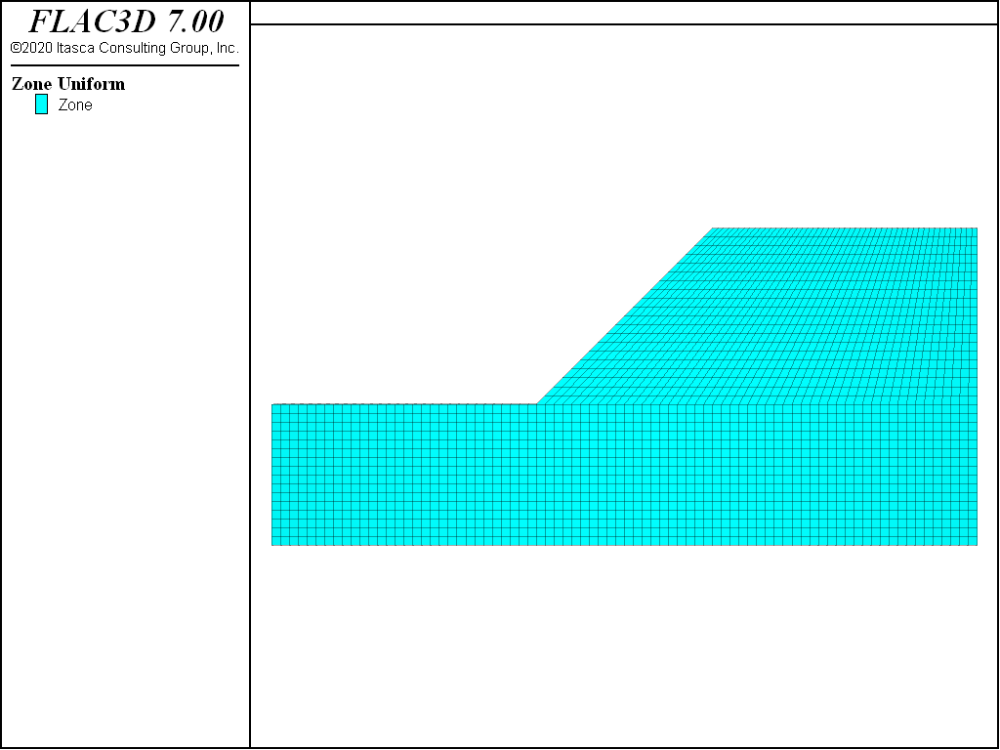
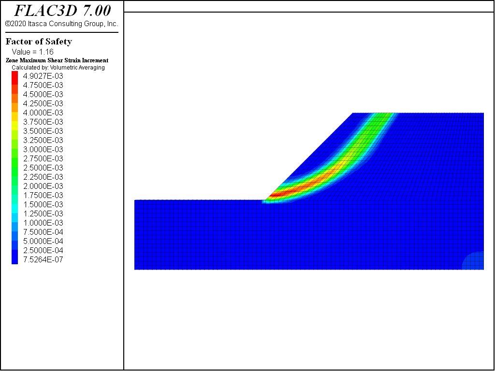
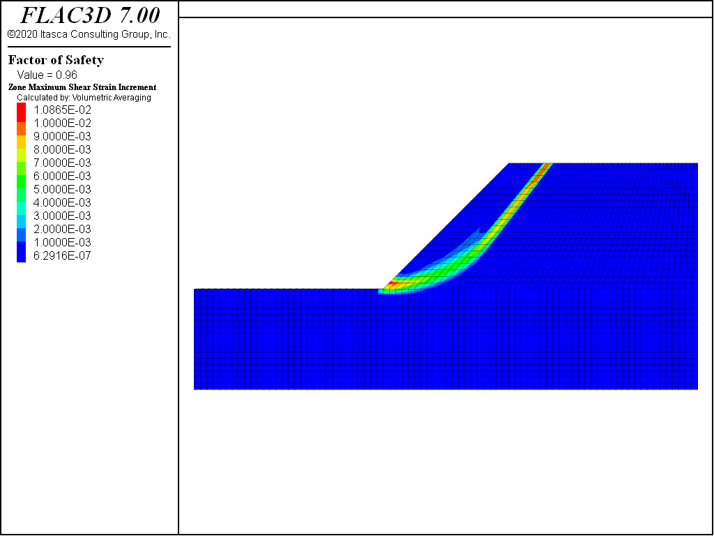

Hoek-Brown 材料中的简单边坡
问题描述
注意
本示例的项目文件可在 FLAC3D 中查看/运行。[1] 该项目的主数据文件见本示例末尾（main data files）。
进行了验证练习，以验证 FLAC3D 中使用 Hoek-Brown 材料的安全系数计算。这些练习检验基于抗剪强度 \(\tau\) 的强度折减计算。
针对一个简单边坡几何，计算了基于 Hoek-Brown 抗剪强度的安全系数，并与 Hammah 等（2005）报道的、采用其他 Hoek-Brown 材料安全系数计算方法（广义 Hoek-Brown 法、等效 Mohr-Coulomb 法以及 Bishop 和 Spencer 极限平衡法）所得结果进行了比较。用于该比较计算的岩质边坡倾角为 45°、高度为 10 m。岩石采用具有以下性质的 Hoek-Brown 材料表示：
| \(E\) | = | 5000 MPa |
| \(\nu\) | = | 0.3 |
| \(\rho\) | = | 2500 kg/m3 |
| \(m_b\) | = | 0.067 |
| \(s\) | = | 0.000025 |
| \(a\) | = | 0.619 |
| \(\sigma_{ci}\) | = | 30 MPa |
本试验所用的 FLAC3D 模型网格见图 1（Figure 1）。默认情况下，当对 FLAC3D 模型（材料模型为 指定网格单元本构模型（zone cmodel assign） hoek-brown）执行 设置安全系数分析参数（model factor-of-safety） 时，将针对 Hoek-Brown 材料的抗剪强度进行安全系数计算。本试验计算得到的安全系数为 1.15。破坏面由图 2（Figure 2） 中的剪应变云图表示。该结果与 Hammah 等（2005）报道的结果吻合良好。表 2（Table 2） 汇总了本试验所报道的安全系数。


图 1：边坡模型网格。


图 2：霍克-布朗材料简单边坡计算得到的安全系数与破坏面。
| 方法 | 安全系数 |
|---|---|
| FLAC3D 采用 Hoek-Brown 材料 | 1.16 |
| 广义 Hoek-Brown 强度折减法* | 1.15 |
| 等效 Mohr-Coulomb 强度折减法* | 1.15 |
| Bishop 简化极限平衡法* | 1.153 |
| Spencer 极限平衡法* | 1.152 |
* 取自 Hammah 等（2005）
Hammah 等（2005）还报道了坡脚处存在水平 Mohr-Coulomb 材料层情形的结果。该层厚 1 m，黏聚力为零、摩擦角为 25°。含 Mohr-Coulomb 层的边坡见图 3（Figure 3）。
执行 设置安全系数分析参数（model factor-of-safety） 时，将同时针对 Hoek-Brown 材料（如Hoek-Brown 材料（Hoek-Brown Material）所述）和 Mohr-Coulomb 材料（如Mohr-Coulomb 材料（Mohr-Coulomb Material）所述）执行强度折减法。该模型计算得到的安全系数为 0.97。结果见图 4（Figure 4）。
表 3（Table 3） 将 FLAC3D 的结果与 Hammah 等（2005）报道的其他方法结果进行了比较。



图 4：含 Mohr-Coulomb 层的 Hoek-Brown 材料简单边坡计算得到的安全系数与破坏面。
| 方法 | 安全系数 |
|---|---|
| FLAC3D 采用 Hoek-Brown 与 Mohr-Coulomb 材料 | 0.96 |
| 广义 Hoek-Brown 强度折减法* | 0.95 |
| Bishop 简化极限平衡法* | 0.934 |
| Spencer 极限平衡法* | 0.963 |
* 取自 Hammah 等（2005）
参考文献
Hammah, R. E. 等。“广义 Hoek-Brown 准则的抗剪强度折减方法”，ARMA/USRMS 05-810，2005。
数据文件
HoekBrownSlope.dat
;************************************************************************
; HB 材料按抗剪强度计算的安全系数
;*************************************************************************
model new
model large-strain off
; --- 几何形状 ---
zone create brick point 0 ( 0,0,0) point 1 (40,0, 0) ...
point 2 ( 0,1, 0) point 3 ( 0,0, 8) size 80 1 16
zone create brick point 0 (15,0,8) point 1 (40,0, 8) ...
point 2 (15,1, 8) point 3 (25,0,18) ...
point 4 (40,1,8) point 5 (25,1,18) ...
point 6 (40,0,18) point 7 (40,1,18) size 50 1 20
zone face skin ; 标记模型边界
; --- 分配模型和属性
zone cmodel assign hoek-brown
zone property density 2.5e-3 young 5000 poisson 0.3 tension 1e10
zone property constant-mb 0.067 constant-s 2.5e-5 ...
constant-a 0.619 constant-sci 30
zone property flag-evolution 1 flag-fos 0
; --- 边界条件 ---
zone face apply velocity-normal 0 range group 'East' or 'West1'
zone face apply velocity-normal 0 range group 'North' or 'South'
zone face apply velocity-normal 0 range group 'Bottom'
; --- 设置 ---
model gravity 10
model save 'initial'
; --- 求解 ---
model factor-of-safety bracket 1.1 1.2 convergence 1 filename 'HBSlope'
model save 'initial'
HoekBrownSlope2.dat
;************************************************************************
; HB 材料按抗剪强度计算的安全系数
; 含摩尔–库仑材料层
;*************************************************************************
model new
model large-strain off
; --- 几何形状 ---
zone create brick point 0 ( 0,0,0) point 1 (40,0, 0) ...
point 2 ( 0,1, 0) point 3 ( 0,0, 8) size 80 1 16
zone create brick point 0 (15,0,8) point 1 (40,0, 8) ...
point 2 (15,1, 8) point 3 (25,0,18) ...
point 4 (40,1,8) point 5 (25,1,18) ...
point 6 (40,0,18) point 7 (40,1,18) size 50 1 20
zone face skin ; 标记模型边界
zone group 'layer' range position-z 8 9
; --- 分配模型和属性
zone cmodel assign hoek-brown
zone property density 2.5e-3 young 5000 poisson 0.3 tension 1e10
zone property constant-mb 0.067 constant-s 2.5e-5 ...
constant-a 0.619 constant-sci 30
zone property flag-evolution 1 flag-fos 0
; --- 摩尔–库仑材料层 ---
zone cmodel assign mohr-coulomb range group 'layer'
zone property young 5000. poisson 0.3 range group 'layer'
zone property cohesion 0 friction 25 tension 0 range group 'layer'
; --- 边界条件 ---
zone face apply velocity-normal 0 range group 'East' or 'West1'
zone face apply velocity-normal 0 range group 'North' or 'South'
zone face apply velocity-normal 0 range group 'Bottom'
; --- 设置 ---
model gravity 10
model save 'initial2'
; --- 求解 ---
model factor-of-safety bracket 0.9 1.0 convergence 1 filename 'HBSlope2'
model save 'initial2'
尾注
| [1] | 要在 FLAC3D 中查看该项目，请使用程序菜单。
⮡ FLAC |
| 这些内容对您有帮助吗？… | FLAC3D © 2019, Itasca | 原文更新于 2020 年 10 月 8 日 |